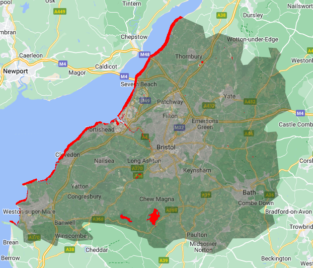
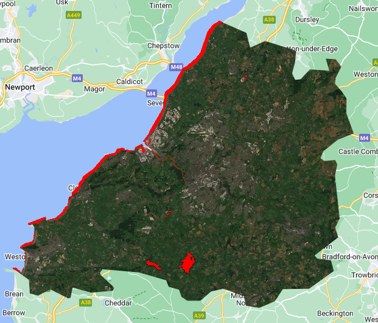

Week 8 Classification with Google Earth Engine II
This week we delved into more advanced topics in land cover classification, the key role of accuracy and model validation in classification, other methodologies for classification, and a revisit of spatial autocorrelation.
Summary
With our quest in classifying land cover types from remote sensing imagery continued, this week’s lecture also emphasised on the significance of accuracy and other performance measures of classification. First, we were introduced to pre-classified datasets available online. I was impressed by the scale of Dynamic World, which uses a CNN-based classification model on Sentinel-2 imagery. Such sources highlights the evolution and ever-growing field of integrating AI or GeoAI with remote sensing.
Accuracy Measurements
There are multiple accuracy measurements and metrics that are covered in this week:
Producer’s Accuracy: The number of true positives (TP), divided by total of ground truth data correctly labeled (TP+FN). This is the error from the point of view of a map maker. In a RS context, it is the actually site A identified that is site A divided by the number of site A in the classifier output. This measures how correct reference pixels are categorised.
User’s Accuracy: From the usually the angle of a map user, refers to type 1 error, or reliability. This measures the ratio of a class identified by the classifier correctly divided by the total number of that class that the model identified. For example, the classifier identified 500 sides to be water, and among them only 450 is actually water, the rest are wrongly labelled. Then the user accuracy is 90%. (TP / TP + FP)
Overall Accuracy: Total correctly labelled data points divided total number of data points.
Kappa Coefficient
Kappa coefficient is based upon the concepts of producer’s and user’s accuracy with a more consistent measure of classification performance for remote sensing, this metric is especially robust for severe class imbalance. Addressing the issues that I discovered in week 7 regarding potential large imbalances in RS images. Using the week 7 practical result of Bristol for example, the overall accuracy did not make up to the fact that the algorithms missed out the water classes, which is extremely misleading in certain scenarios. Thus, Kappa calculates two sets of measures:
Observed Agreement: The proportion of pixels correctly labelled.
Expected Agreement by Chance: What will the probability be if a total random classifying process happened? (all classes assigned randomly)
By considering both the above agreements, Kappa is derived. Kappa ranges from -1 (perfect disagreement, classifier performing worse than random) to 1, (perfect classification) and 0 representing no difference between the classifier and randomly assigning classes.
In addition, advanced methods for RS image classification and cross-validation techniques are introduced. The first one is OBIA (Object-Based Image Analysis) and Sub Pixel Analysis. OBIA focuses on image segments that represents meaningful objects or regions in RS context. It also analyses the characteristics within a cell considering both the how similar the features are within the cell (homogeneity) and how diverse the features are in one cell. (heterogeneity) OBIA can group similar pixels together to form super-pixels, which is a novel methods that drastically improved the segmentation and classification performance.
For this week’s practical, I tested the classifications from GEE and after visual assessment I discovered that although the train/test accuracy is still high, the actual performance is still lacking. It is because that the GEE in-house classification methods seems to be less ideal than many of the demo GEE applications published by other researchers with CNN or other deep-learning approaches. Therefore, I investigated further into the literature for classification with GEE.
Literature Review and Applications
For last week’s diary, I mainly looked into how the advanced techniques handle the spatial or image complexity, in this week, I have also investigated on some of the work in bringing novel frameworks on the the temporal complexity of remote sensing imagery time series data. One of the first applications of integrating temporal characteristics with classifiers was to monitor vegetation diversity and changes, (Račič et al. 2020) but the resolution and scale of areas covered are limited.
Recently, Truong et al. (2024) published their recent work on high resolution land use map of Vietnam using optical and SAR images from Japan Aerospace Exploration Agency. (JAXA) They designed a CNN approach over a time-feature domain and the new output outperformed the existing LULC map for Vietnam. Their innovation highlights a CNN, contrasting to the traditional framework, that focus on extracting both temporal and feature information from pixels. (A look into the Vietnam LULC data on JAXA, the paper can be found here.)
The limitation to integrating temporal information with feature classifiers, is that the temporal resolution and the corresponding sampling rate is not consistent, although the revisit of a satellite is regular and predictable, not all images in a series are of high quality and suitable for analysis. (Bazi et al. 2019) However, such considerations are worth investigating for remote sensing to construct more accurate and context-aware model. Researching into the potential of traditional complex feature models’ integration with temporal information can also benefit the urban sustainability assessment with RS data. (Li et al. 2023)
More Practical on Identification of Water Bodies
I was curious about the identification of water back in the week 7 practical, while searching online, I discovered this an open GEE module to identify water with deep learning developed by: GEE StudyRoom on CSDN (CSDN is the Chinese version of StackOverflow). The code to use the module is:
var dataset_lv2 = ee.FeatureCollection("FAO/GAUL/2015/level2");
var Bristol_point = ee.Geometry.Point([-2.5879, 51.4545]);
/*
The visualization and image selected ommitted
*/
var model = require('users/nietaoyuan/aGEECommonModule:geeDLWaterModel.js');
var imgPredict = model.waterModel(imgMedian,roi);
Map.addLayer(imgPredict,{'palette':'red'},'water');With the help of deep learning, (potentially CNN, the author did not give details to their published module) the accuracy of identifying water has improved significantly, some creeks still not identified, but the overall performance in water body identification is much better.


Detailed result presented in a GEE App:
Reflection
Throughout the learning journey thus far, I have cultivated a fundational understanding of the basics of UI design and GEE analytic workflow. This could not be possible without a vibrant open-source community with many well-established GEE user-organised online communities , among wich GEEStyduRoom stands out as a particularly invaluable and timely resource with its generous sharing of latest publication analysis and codes.
Reflecting on this week’s learning, I was to learn OBIA and Kappa, as these concepts are key to establish sound models for proper classification. Moving forward, I am curious about the next week’s SAR contents as in my literature review, there have been many cases where optical and SAR images are combined to analyse LULC classes. Due to the space and time constrains, I will not develop more apps, but I certainly in be interested to, with the help of the GEE community develop reinforcement learning models (Subramanian and Crowley 2017) for extracting the land cover dynamics.
As a enthusiast of methodology research, my brief exploratory quest in to the integration of spatial and temporal information with RS classifiers has also concluded. This literature review practice, afforded me a comprehensive look in to the contemporary evolution of RS classification methodologies, alongside an exploratory attempt to identify their limitation and future applications. I realised that RS is a crucial tool in delivering fine-grained data for urban environment monitoring and sustainable urban development.